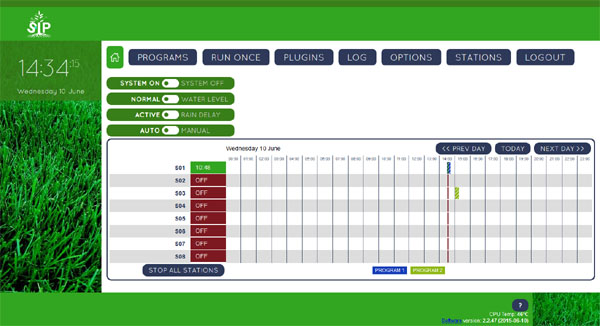

Welcome to SIP
If you are interested in putting together a DIY Raspberry Pi or Beagle Bone Black based irrigation (sprinkler) controller that can have custom software and hardware features you have come to the right place.
The core software is written in Python, runs under Linux, and the user interface, accessible via your favorite web browser, is created in JavaScript and jQuery.
Connecting to your irrigation system
There are several options for interfacing your Raspi or BBB to an irrigation system.
- The least expensive option is to use a relay board as described in the documentation for the relay_board plugin for SIP
- An Interface board from OpenSprinkler.com. This includes an enclosure that is designed for an Arduino based system. You will need to cut some holes in the enclosure to be able to access all the ports on the Pi/BBB
- TIAO Smart Sprinkler Pi - 16 Station Sprinkler Controller. A less expensive Chinese clone of the board listed above. Does not include an enclosure but has more stations without needing to add an expansion board.
Customizing the software
If you are a programmer, or would like to learn, you can easily create plugins to experiment with new software features without affecting the core program.
or
you can select from a growing number of useful plugins shared by others.
To get started see the instructions for setting up the software on the project's wiki.